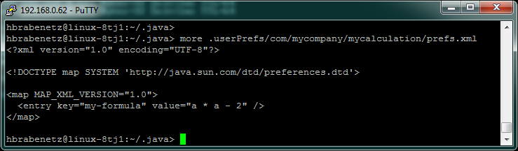

When I make a Project, I must decide where the configuration settings will be stored.
There are many diffeneret solutions:
I was inspired by log4j:
The programmer says, that he want log some information.
It is everytime possible to simply change the target (FileSystem, DB, MailServer, ...) where the information ist logged out.
The Programmer must not care about it.
For Settings, the Solution could be similar.
The Programmer says he want the settings for Key 'xyz', and should not care about where the Settings comes from.
Developer wants the settings for Key 'com/mycompany/mycalculation/my-formula' He create the following SettingsManager-Class:
public class SettingsManager {
public static String getMyFormula() {
return Settings4j.getString("com/mycompany/mycalculation/my-formula");
}
}
By default the Deployer can chose to configure the developers app with the SystemProperties, JNDI-Context, Preferences (User or System) or the Classpath (in this order).
He can also define his own settings4j.xml (e.g.: for Database-Configuration, a single Property-File, mapping aliases, caching etc...)
System Properties can be set as java.exe Argument (JAVA_OPTS):
java -Dcom/mycompany/mycalculation/my-formula=a*a .....
You can also add SystemProperties on the Tomcat-Startup
cd %TOMCAT_HOME%/bin set JAVA_OPTS=-Dcom/mycompany/mycalculation/my-formula=a*a startup.bat
With JBOSS you can set SystemProperties with mbeans: org.jboss.varia.property.SystemPropertiesService
<server>
<mbean code="org.jboss.varia.property.SystemPropertiesService" name="jboss.util:type=Service,name=SystemProperties">
<attribute name="Properties">
com/mycompany/mycalculation/my-formula=a*a
</attribute>
</mbean>
</server>
In this Example Settings4j.getString("com/mycompany/mycalculation/my-formula") returnes "a * a".
If you want access to the JNDI-Context. you must prepare your (Web) Application
web.xml
similar to the specification add a resource-ref into your web.xml like the following:
....
....
<resource-env-ref>
<resource-env-ref-name>
com/mycompany/mycalculation/my-formula
</resource-env-ref-name>
<resource-env-ref-type>java.lang.String</resource-env-ref-type>
</resource-env-ref>
....
</web-app>
Server specific deployment descriptors
Dependents of the Server you must also place a XML Configuration into your webapp (rtm):
Tomcat Example
Add the configuration-value into the server.xml
%TOMCAT_HOME%/conf/server.xml
<Server ...>
...
<!-- Global JNDI resources -->
<GlobalNamingResources>
...
<!-- Test calculation configuration-Path for demonstration purposes -->
<Environment name="com/mycompany/mycalculation/my-formula" type="java.lang.String" value="a + a * a" />
</GlobalNamingResources>
...
...
</Server>
Add the Tomcat-specific deployment descriptor to your webapp:
META-INF/context.xml
<Context path="/${artifactId}" docBase="${artifactId}" debug="0">
<ResourceLink name="com/mycompany/mycalculation/my-formula" global="com/mycompany/mycalculation/my-formula" type="java.lang.String" />
</Context>
In this Example Settings4j.getString("com/mycompany/mycalculation/my-formula") returnes "a + a * a".
Preferences stored and read by java.util.prefs.Preferences.
Where the Data are "really" stored is OS dependent:
See:
With Windows you can edit your formular with regedit.exe:
In this Example Settings4j.getString("com/mycompany/mycalculation/my-formula") returnes "a * a - 2".
With Linux you can edit your formular with your prefered editor:
In this Example Settings4j.getString("com/mycompany/mycalculation/my-formula") returnes "a * a - 2".
The Key-Value can also be placed into the classpath:

In this Example Settings4j.getString("com/mycompany/mycalculation/my-formula") returnes "a * a".
The ClasspathConnector reads the Content with "UTF-8" per default.